Below are some notes about data visualization from a zoomed out perspective.
40.1 Big picture
We can think of data visualization as a product lifecycle.
Iterations are going to be a very important part of this process.
We will have questions that we need to answer and want to eliminate terrible choices so that we can narrow down to potentially good choices (there are many correct ways, but eventually want to find the best).
The goal is not to have something be right the first time we make it.
40.2 Storytelling with data
Here is a summary some of the main ideas from the Storytelling with Data reading.
40.2.1 Clarity
Good general reminders
Don’t be afraid of whitespace.
Be aware of colorblindness / color contexts.
Simplicity is important (and organization).
Clarity of communication is important.
New concepts / ideas
-
Audience has a short window of attention (general audience may be shorter because they have no personal investment in it).
- If you’re the expert, then hopefully the window will be longer.
Cognative load theory and Gestault principles help guide decisions.
Focusing the attention
-
There are preattentive attributes that we can take advantage of (e.g. color, size, movement, positions, angles, shape, etc.). Differences in these help us to instinctively notice very quickly (without even processing the info).
If we want to highlight one aspect of a plot, make it stand out (leverage it) by using a preattentive feature.
Color and shape are usually most effective for drawing attention (e.g. if want them to takeaway trend, then put in a bold trend line).
-
Attentive attributes can make it harder to get information and also slow down the process of getting the info.
- Attributes become attentive when we use too many at once (something that we have to actively process / think about each individual object); e.g. using combinations of preattentive features (e.g. color and shape).
Color (from book)
Colorblindness (most prevalent is red/green and red/blue); so, can maybe use orange/blue for -/+ or add another feature to help distinguish.
-
Context (evocation / association): Colors often naturally carry a meaning (blue for cold and red for hot)
- Don’t try to fight the way the audience will naturally want to see it.
Consistency (plot-to-plot) (if a group is green, make it green in all other plots as well).
Color (not from book)
-
Colorspace (how we decompose color information): HSV
Hue (color), Saturation (how much color intensity), Value (shade)
i.e. translate data values to different properties of colors
-
HSV is a good way to think about color when wanting to isolate a property of color while holding the other two constant.
- Saturation is the least effective (but can carry some quantitative meaning - i.e. darker intensity relates to larger vales).
40.2.2 Cut the clutter
Ink to information ratio: If there is a lot going on in the plot, then it better be carrying a lot of information. (e.g. get rid of unneeded legends, extra tick marks, simplifying the data by aggregating)
-
Cognitive load theory says that we have finite mental resources.
Intrinsic load: Difficulty of the task (i.e. in data viz, understanding info from a plot).
Extrinsic load: Distractions / interferance with the main taks (e.g. reading bad labels, they have to figure out what the label means becuase we made it bad); very important to minimize this.
-
Germain load: Learning how to do the task (i.e. if giving someone a boxplot and they don’t know how to read a boxplot, they have to first have to learn how to read it).
- We have to consider this; it is something that we can help with (i.e. priming them with what to look for).
-
Gestault principles: Visual features that cause multiple objects to be perceived as groups.
Simplifies plots by being able to think of things as a group instead of many individual things.
We can assist with this by coloring different points for example (e.g. proximity, connection, similarity, continuity, enclosure, closure)
40.3 Graphical perceptions
Here is a summary of the results of 39 different studies on data visualization
40.3.1 Graphical comparisons of numeric values
Bar charts vs line charts
When connecting things with lines, people see trend (even if that wasn’t the intention).
We read from right to left as a continuous thing; so, if want them to think about any number of values as discrete, maybe a bar chart (so they are separate) will be better.
Bias for sizes, shapes and colors
- A lot of how we percieve things depends a lot on context. Things close together or far apart can look different (and things surrounding it can change look).
3D
- (3D pie charts) can often skew data so that size doesn’t match up to the corresponding proportion.
Perceptual hierarchy (cleveland and mcgill (1984))
-
Perceptual hierarchy is how an audience can most accurately decode the information that you encoded in a graph
- For example, knowing what kind of comparison you want to make will help tell you which axis you need to align.
In every plot we try to encode numeric info (even with categorical data, we look at counts or frequencies).
-
Example: Can I accurately compare magnitudes of to values graphically? If we have the numbers 5 vs 2, we know that 5 is 2.5 times as large as 2 (this is the information that we want to encode in a visual). Going from best to worst:
Position on a scale in most accurate (because we can “look up” the values).
Position on unshared scales are also pretty good (can still look up values; axis should have labels).
Length
Angle
Area
Volume (projection)
Shade (probably going to get the least accurate information returned)
Several of the above are used in the most common graphs.
Special consideration for categorical data visualization (bars vs pies)
-
Comparing parts of a single population.
Options: Pie, stacked bar chart, regular bar chart
Pie charts are best for getting proportions (easier when have no axis / scale, and easier to think of whole pie chart as 1). But often this isn’t the most important question we are trying to answer.
Bar charts are best for relative comparisons (i.e. group vs group).
-
Parts of multiple groups
Options: Pies, stacked bars, proportionally stacked bars, dodged bar chart
Never use pies
Stacked and proportionally stacked bars are good with unshared scales and when wanting to look at conditional proportions (i.e. within group comparisions).
Position dodge can be good with ordinal data and maybe want to show trend (? connecting bars maybe)
40.4 Parts of a data story
GOAL: Tell the audience what you’re going to tell them, tell them, and then tell them what you told them.
Here are the parts that we need to have in the story:
Beginning
- Context (observations, measurments, time frame, etc.)
Middle
Visualization
Aesthetic mapping: Describe the plot attributes (i.e. how the data is connected to the plot).
Explain what are the trends, comparisons, outliers, etc. of interest?
End
So what? Give them a takeaway.
What should the audience know / think / do after the presentation?
Causal statements
Have to be careful not to overstate what the data tells you.
Can maybe include some reference items or annotations to help support our viewpoint.
3 min stories with data visualization
Can frame our talk like we are the expert and the audience should believe our claims.
The evidence is in front of them in the form of our plot.
40.5 Beautiful design
Tufte’s principles for analytical design
- Comparisons
What’s the difference?
Talking about only one thing just gives its properties and isn’t very interesting.
- Structure / mechanism / causality
- Very good visualization if can say why something happened, but be very careful to not say too much.
- Multivariate
- What are the relationships?
- Integration of evidence
What is the context?
Make it easy for the audience to get the information (e.g. directly labeling lines on plots can be easier than using a legend underneath).
- Documentation
Why should the audience trust it?
Good documentation gives it credibility.
- Content matters most of all
Why should the audience care?!
Make sure that the content is relevant.
40.6 Redesigning plots
40.6.1 Read in data
# read in dataset in with desired column attributes
data_ff <- read_csv("tutorials/reshaping-and-combining-data/www/french-fries.csv", col_names = TRUE, col_types = "cfffnnnnnn")40.6.2 Example 1
To start, we will make plot similar to one that we have seen before in notes
# make line plot of potato flavor over time, one line per subject with average line
# first we need one row per time per person (two batches)
data_subject <- data_ff %>%
group_by(subject, time) %>%
summarise(avg_potato = mean(potato, na.rm = TRUE))
# overall average potato score at each time
data_potato <- data_ff %>%
group_by(time) %>%
summarise(avg_potato = mean(potato, na.rm = TRUE))
# line plot with one line per person with average per week
ggplot() +
geom_line(data = data_subject,
aes(x = time,
y = avg_potato,
group = subject)) +
geom_line(data = data_potato,
aes(x = time,
y = avg_potato,
group = 1),
size = 2,
color = "brown", ) +
theme_bw()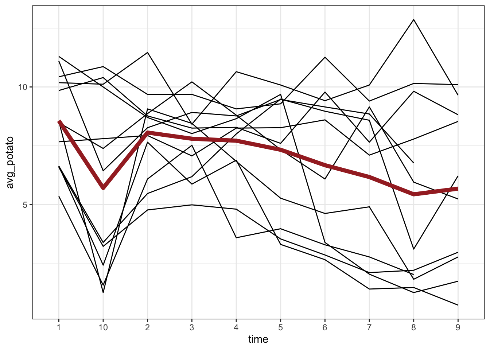
Checklist of things we need to fix / add to plot
Coloring each line doesn’t add anything useful and makes it too busy.
Add title and fix axis labels
Legend of some kind for red line
Make bold line stand out more
etc.
Here is how we can do the above in ggplot (NOTE: going overboard slightly for demonstration purposes).
Can use
alphaargument to make lines lighter (makes more transparent: i.e. plays with saturation of color).-
One way to add a label on graph: Can create another dataframe that is 1 x 3 and has an
x,y, and alabel. Then usegeom_text()(which works likegeom_point(), but with words).- For simple case (cause we only want one label): use
annotate(), which just gives the info above directly.
- For simple case (cause we only want one label): use
-
Can then add attributes to the annotation to make it clear that it goes with bolded average line.
- Can use text parsing things within labels / axis titles (such as
\nline break).
- Can use text parsing things within labels / axis titles (such as
# create improved plot
ggplot() +
geom_line(data = data_subject,
aes(x = time,
y = avg_potato,
group = subject),
color = "brown",
alpha = 0.5) +
geom_line(data=data_potato,
aes(x = time,
y = avg_potato,
group = 1),
size = 2,
color = "brown") +
annotate(geom = "text",
x = 5.5, y = 8, label = "Overall average score",
color = "brown", size = 5) +
labs(title = "Potato flavor profiles over week",
subtitle = "by subject",
x = "Week",
y = "Potato flavor score") +
theme_bw() 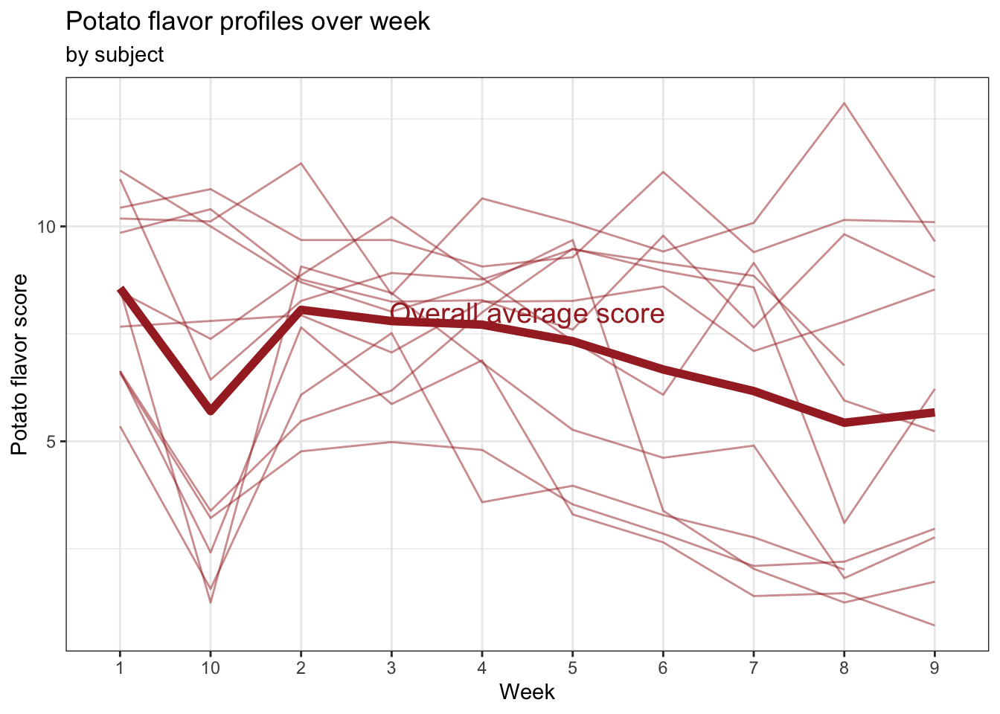
40.6.3 Example 2
Now we are going to convert the data to long format where flavor and score variables replace 5 flavor columns.
# reshape data
# -> then find average for each subject within a flavor category each week
data_long <- data_ff %>%
pivot_longer(cols = potato:painty, names_to = "flavor_type", values_to = "flavor_score") %>%
group_by(subject, time, flavor_type, treatment) %>%
summarise(avg_score = mean(flavor_score, na.rm = TRUE))
# lineplot for each persons score over time, broken down by flavor and oil treatment
ggplot() +
geom_line(data = data_long,
aes(x = time,
y = avg_score,
group = subject))+
facet_grid(flavor_type ~ treatment)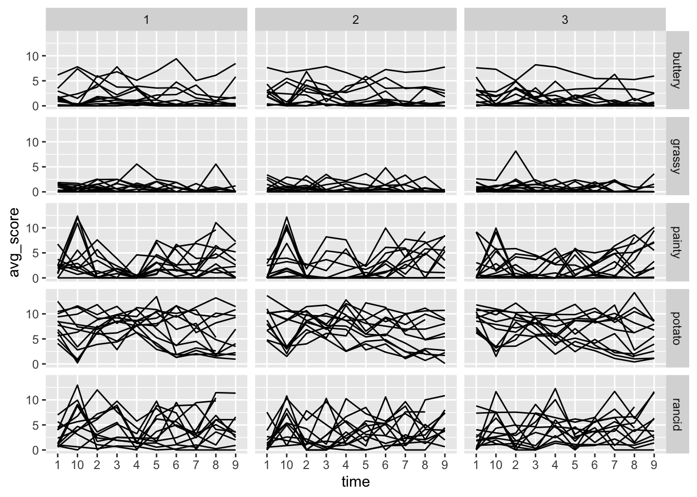
# a basic plot with average "smoother" for each flavor/oil combination
ggplot() +
geom_line(data = data_long,
aes(x = time,
y = avg_score,
group = subject)) +
stat_smooth(data = data_long,
aes(x = time,
y = avg_score,
group = 1,
color = flavor_type),
span = 2, method = "loess", se=FALSE, size = I(2)) +
facet_grid(flavor_type ~ treatment)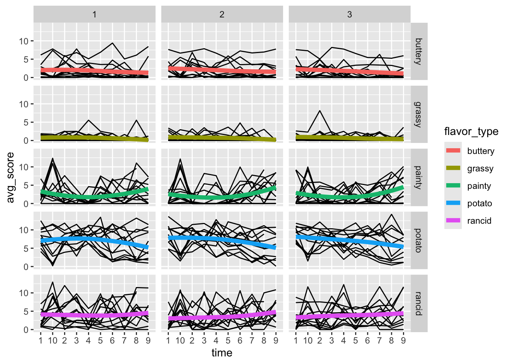
# controlling scales and themes
# -> this uses some of the same tricks we used in example 1 -> but still not good and needs to be fixed
ggplot() +
geom_line(data = data_long,
aes(x = time,
y = avg_score,
group = subject),
alpha = 0.3) +
stat_smooth(data = data_long,
aes(x = time,
y = avg_score,
group = 1,
color = flavor_type),
span = 2, method = "loess", se=FALSE, size = I(2)) +
facet_grid(flavor_type ~ treatment,
scale = "free_y")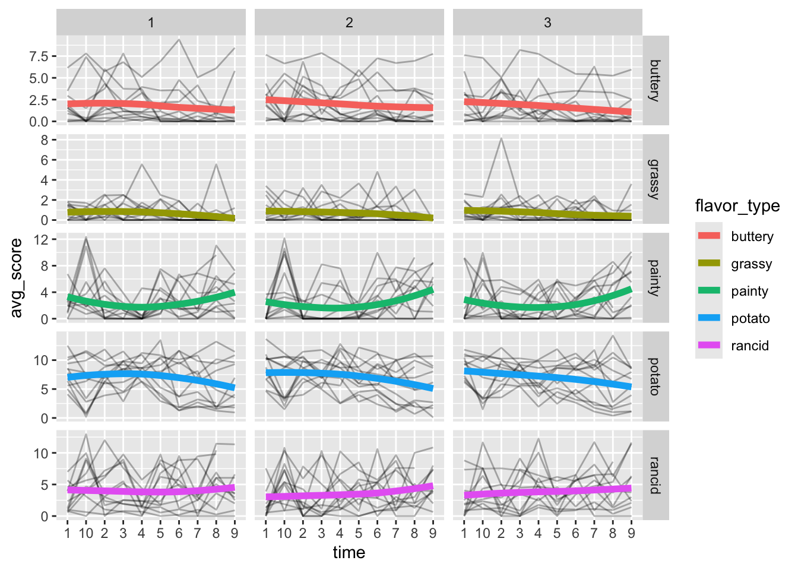
Checklist of things to improve
Cut legend
Clean up axis ticks / labels
Add title / axes
Arrange facet labels
Oil labels
Note
-
All things that determine how the plot looks that are not
geomrelated are controlled in atheme()statement.- Can use similarly named arguements to control certain elements (i.e. groups of arguments), unless we want to determine how the geoms are scaled.
Here is how we will make the needed improvements.
-
When making facetted graphs, you want to have a lot of control over how the narrative unfolds.
So depending on how we are presenting it (maybe a paper), it will determine how we make plot.
If presenting, we can walk audience through more; but if writing, then maybe want to split into several plots so not so much.
Regardless, it is helpful to include subtitle explaining what facets mean.
For facet labels, occasionally it is better to go back to the data (the actual data values) and change them (because plot will inherit them)
legend.position = c(0.2, 0.8): Puts legend 20% from right and 80% from bottomscale_y_continuous(): Use for a continuous y scale, can control tick marks, breaks and labels.Can add documentation via a caption in the
labs()(just puts a little blurb in the corner).If there is something that we don’t know how to do, we can look at the documentation. For example,
theme(strip background = < ... >)works with the bacground of facet labels.-
Can also remove things from certain elements with
element_blank().- It is better to remove things like axis titles in the theme rather than in the labels (i.e. make an empty string x = ““) because it will remove it from the construction of the graph and not leave space for it
# clean treatment strings
data_long %<>% mutate(treatment = paste("Oil", treatment))
# make improved plot
ggplot() +
geom_line(data = data_long,
aes(x = time,
y = avg_score,
group = subject),
alpha = 0.3) +
stat_smooth(data = data_long,
aes(x = time,
y = avg_score,
group = 1,
color = flavor_type),
span = 2, method = "loess", se=FALSE, size = I(2)) +
facet_grid(flavor_type ~ treatment,
scale = "free_y",
switch = "y") +
scale_y_continuous(limits = c(0,16), breaks = seq(from = 0, to = 16, by = 4)) +
labs(title = "All flavor profiles over week",
subtitle = "faceted by flavor type and oil",
x = "Week",
y = "Flavor score",
caption = "Data source: ISU Study 2003\nPlot by me") +
theme(legend.position = "none",
strip.background = element_rect(fill = "white", color = "black"),
axis.ticks = element_blank(),
axis.title = element_blank())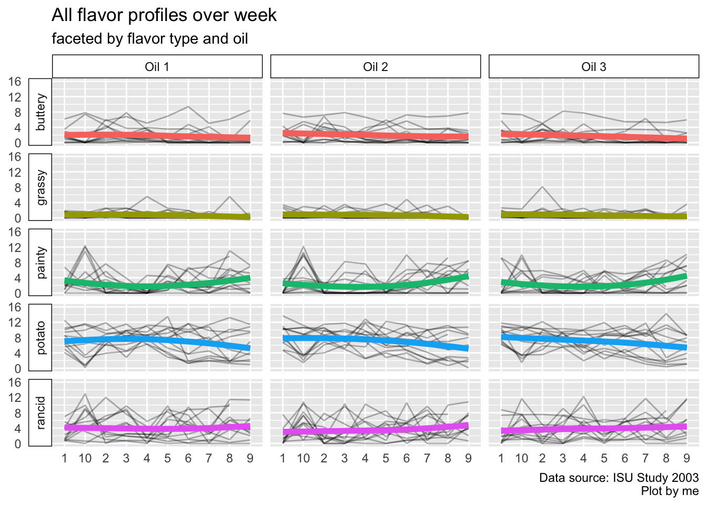
40.6.4 Saving plots
-
Pixel based graphs (e.g. png): Save a bunch of boxes of color and looks granulated when zooming in (they don’t have high resolution).
Copying the graph makes it a pixel based graph.
Fix: Save at a higher resolution or save with the size that you will print it to (e.g. a poster).
-
ggsave()does a better job than just exporting it.Can make it have a higher resolution by specifying the dpi argument (dots per inch): Max is 900. Note that files get pretty big though with higher dpi.
Vector based graphs: Save the actual attributes of all of the lines, dots, and other features of plot and they redraw it every time you look at it. These are more finnacy with where you can put the saved image (e.g. pdf).
Error in `ggsave()`:
! Can't save to < path >.
ℹ Either supply `filename` with a file extension or supply `device`.40.6.5 Example 3
Rows: 1,704
Columns: 6
$ country <fct> "Afghanistan", "Afghanistan", "Afghanistan", "Afghanistan", …
$ continent <fct> Asia, Asia, Asia, Asia, Asia, Asia, Asia, Asia, Asia, Asia, …
$ year <int> 1952, 1957, 1962, 1967, 1972, 1977, 1982, 1987, 1992, 1997, …
$ lifeExp <dbl> 28.801, 30.332, 31.997, 34.020, 36.088, 38.438, 39.854, 40.8…
$ pop <int> 8425333, 9240934, 10267083, 11537966, 13079460, 14880372, 12…
$ gdpPercap <dbl> 779.4453, 820.8530, 853.1007, 836.1971, 739.9811, 786.1134, …Example plots that need design improvements and attention to analytical design principles.
# 1. Timeplots of life expectancy
ggplot(data = gapminder) +
geom_line(aes(x = year,
y = lifeExp,
group = country))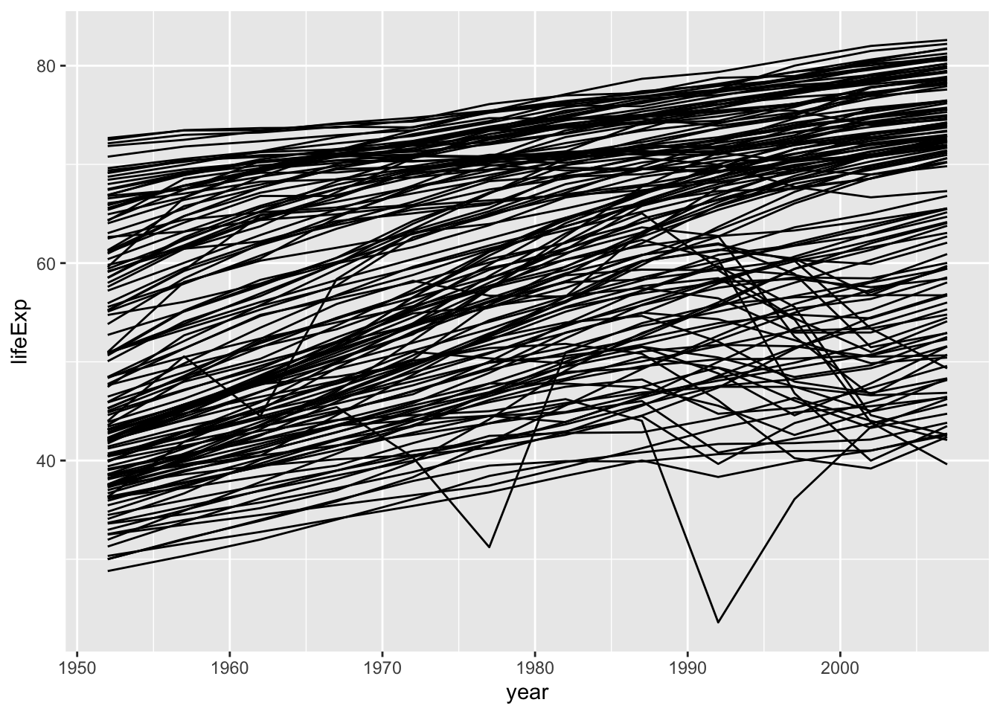
# 2. Scatterplot of relationship between gdp and life expectancy
ggplot(data = gapminder) +
geom_point(aes(x = gdpPercap,
y = lifeExp,
size = pop))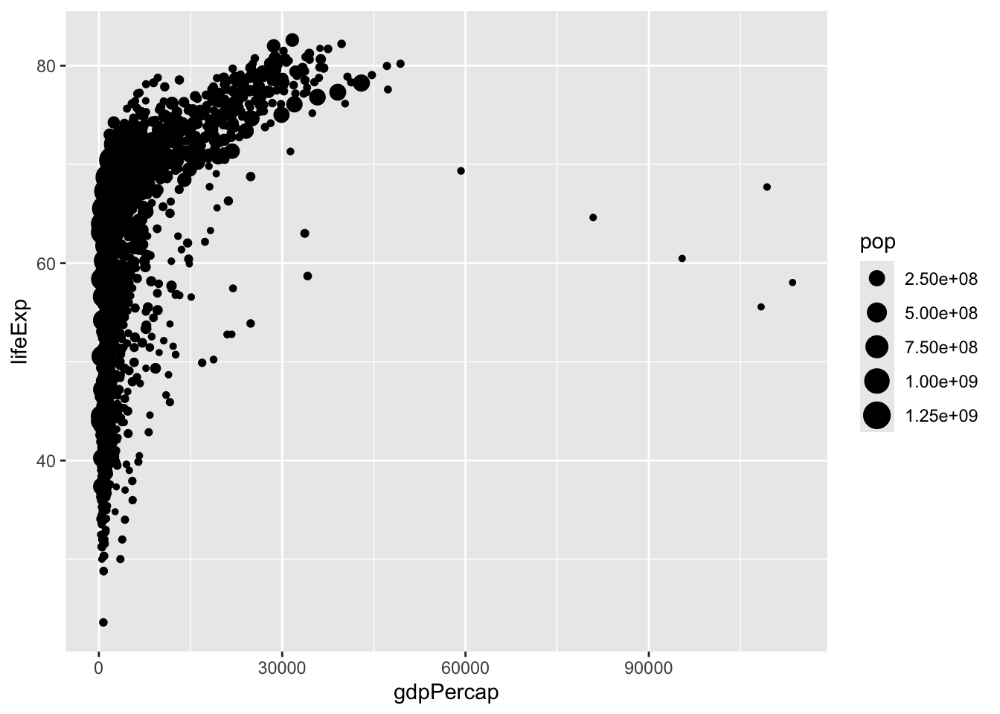
# 3. Boxplots of three variables for each countries, by continent, in 2007
data_2007 <- gapminder %>%
filter(year == 2007) %>%
pivot_longer(cols = lifeExp:gdpPercap, names_to = "metric", values_to = "value")
ggplot(data = data_2007) +
geom_boxplot(aes(x = continent,
y = value))+
facet_grid( . ~ metric)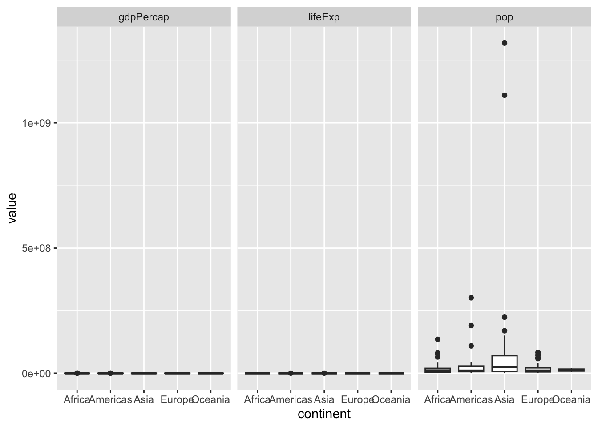
Here are the redesigns.
# 1. Timeplots of life expectancy
# GOAL -> look at life expectancy per year by continent
# -> include an average trend line for each continent
# make plot to show above
ggplot(data = gapminder) +
geom_line(aes(x = year,
y = lifeExp,
group = country,
color = continent),
alpha = 0.3) +
stat_smooth(aes(x = year,
y = lifeExp,
group = 1,
color = continent),
span = 2, method = "loess", se = FALSE, size = 1.5) +
scale_x_continuous(breaks = as.integer(quantile(gapminder$year))) +
facet_grid(. ~ continent) +
labs(title = "Life expectancy by country",
subtitle = "by continent",
x = "Year",
y = "Life expectancy") +
theme_bw() +
theme(legend.position = "none")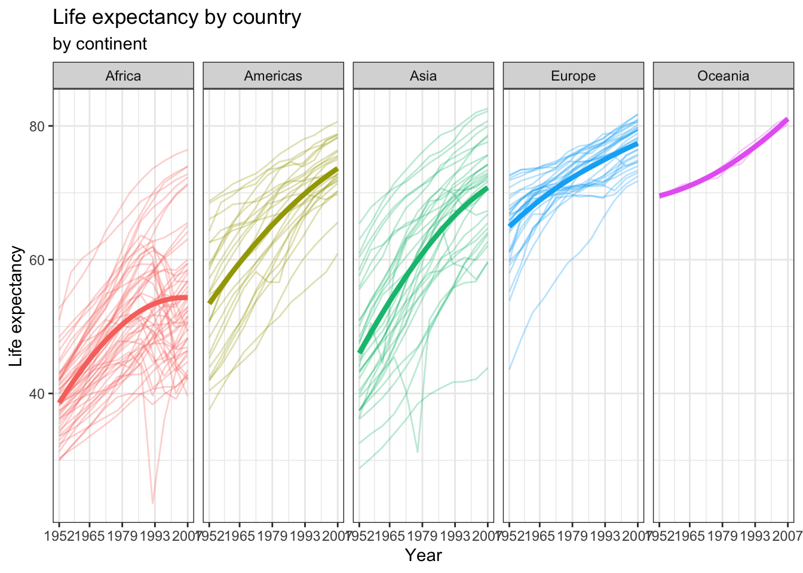
# 2. Scatterplot of relationship between gdp and life expectancy.
# GOAL: color countries by continent and fix pop scale to be readable
# -> only look at first / last year of data to see how the trends change (and so less overplotting of all country / year combos)
gapminder %>%
filter(year %in% c(min(.$year), max(.$year))) %>%
ggplot() +
geom_point(aes(x = gdpPercap,
y = lifeExp,
size = pop / 1000000,
color = continent),
alpha = 0.5) +
scale_x_continuous(labels = scales::comma) +
scale_size_continuous(labels = scales::comma) +
facet_wrap(year ~ .) +
labs(title = "Life expectancy vs GDP per capita",
size = "Population (in millions)",
color = "Continent",
x = "GDP per capita",
y = "Life Expectancy") +
theme_bw()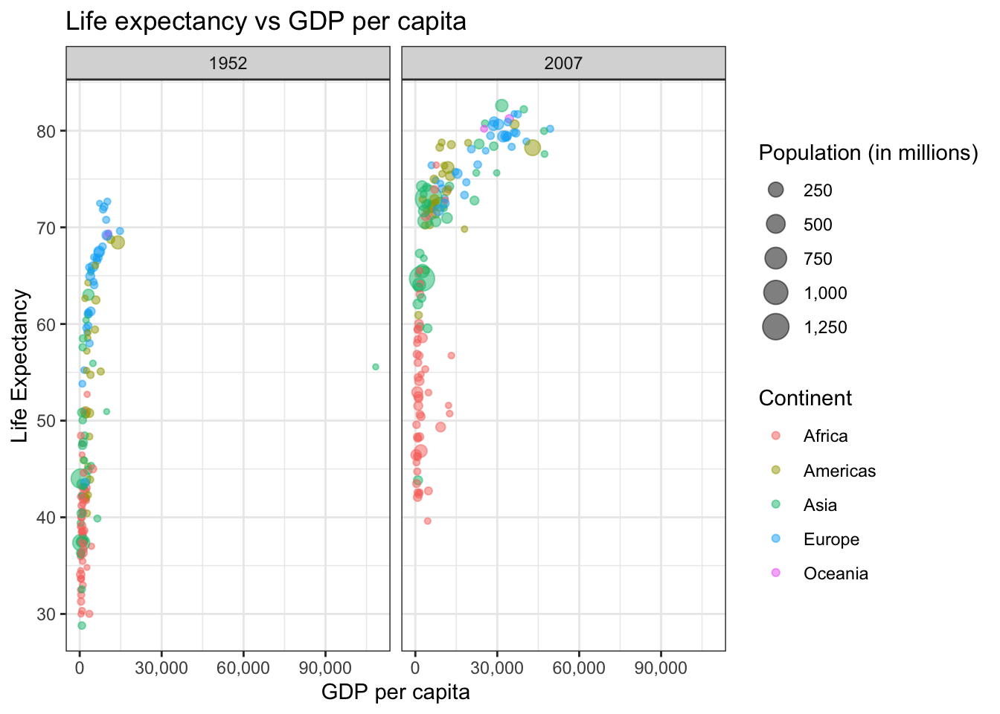
# 3. Boxplots of three variables for each countries, by continent, in 2007
# GOAL: horizontal boxplots with better labels and scales
data_2007 %>%
mutate(value = case_when(metric == "pop" ~ value / 1000000,
.default = value),
metric = case_when(metric == "gdpPercap" ~ "GDP per capita",
metric == "lifeExp" ~ "Life expectancy",
metric == "pop" ~ "Population (in millions)")) %>%
ggplot() +
geom_boxplot(aes(x = value,
y = continent,
color = continent))+
facet_wrap(metric ~ ., scales = "free_x") +
labs(title = "Metrics by continent for 2007",
x = "Value",
y = "Continent") +
theme_bw() +
theme(legend.position = "none")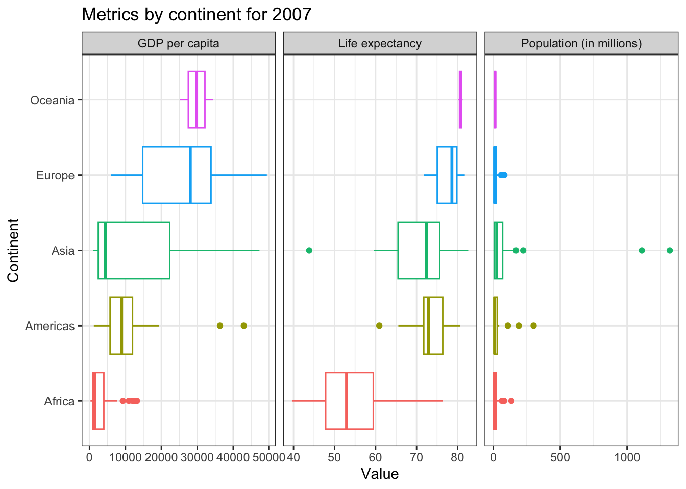